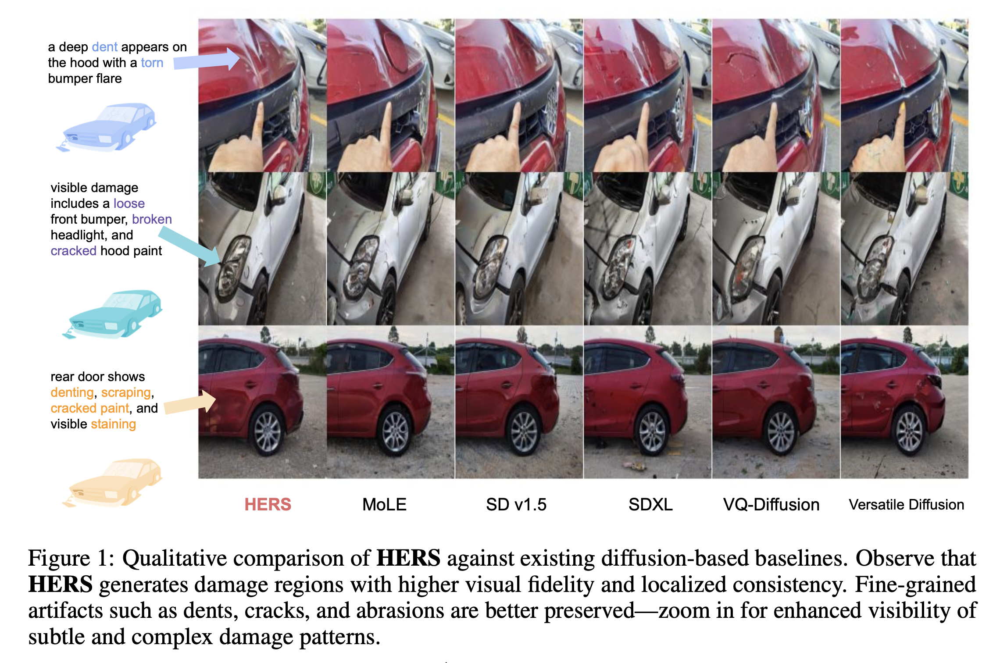
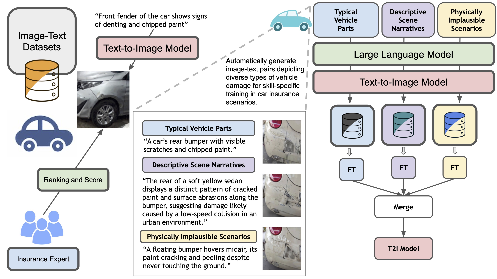
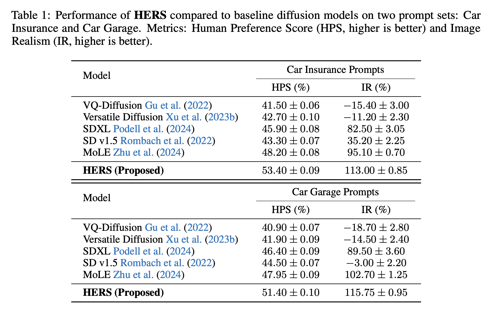
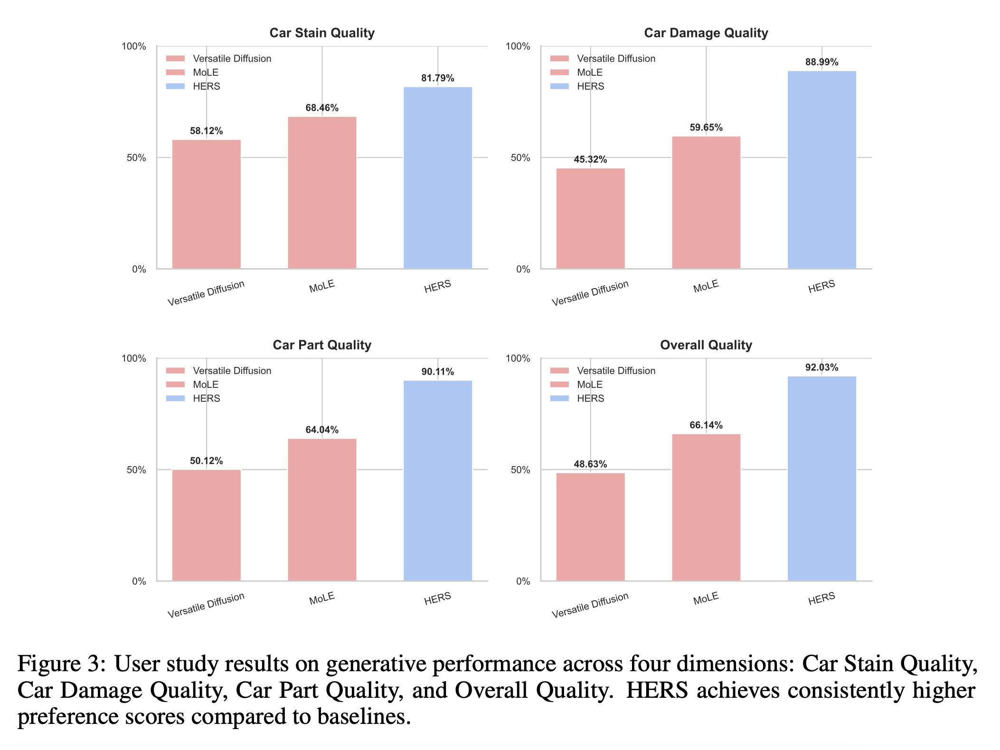

HERS: Hidden-Pattern Expert Learning for Risk-Specific Vehicle Damage Adaptation in Diffusion Models

Abstract
Recent advances in text-to-image (T2I) diffusion models have enabled increasingly realistic synthesis of vehicle damage, raising concerns about their reliability in automated insurance workflows. The ability to generate crash-like imagery challenges the boundary between authentic and synthetic data, introducing new risks of misuse in fraud or claim manipulation. To address these issues, we propose HERS (Hidden-Pattern Expert Learning for Risk-Specific Damage Adaptation), a framework designed to improve fidelity, controllability, and domain alignment of diffusion-generated damage images. HERS fine-tunes a base diffusion model via domain-specific expert adaptation without requiring manual annotation. Using self-supervised image-text pairs automatically generated by a large language model and T2I pipeline, HERS models each damage category—such as dents, scratches, broken lights, or cracked paint—as a separate expert. These experts are later integrated into a unified multi-damage model that balances specialization with generalization. Experiments across four diffusion backbones show consistent improvements, including +5.5% text faithfulness and +2.3% human preference over baselines. Beyond image fidelity, we discuss implications for fraud detection, auditability, and safe deployment of generative models in high-stakes domains such as auto insurance.
HERS (Hidden-Pattern Expert Learning for Risk-Specific Damage Adaptation) is a diffusion-based framework that addresses a critical gap in deploying generative models within safety-critical domains such as auto insurance. While modern text-to-image diffusion models produce visually realistic outputs, they often fail to capture subtle, liability-relevant damage patterns—such as faint dents, hairline cracks, asymmetric breakage, or signs of tampering—that are essential for fraud detection and claim validation. HERS reframes vehicle damage synthesis as a risk-specific adaptation problem rather than a generic image generation task.
The framework operates without manual annotation or human feedback by leveraging large language models to automatically generate diverse, damage-aware prompts paired with synthetic images from a pretrained diffusion backbone. From this self-supervised data, HERS trains lightweight LoRA-based experts, each specializing in a distinct damage category including dents, scratches, cracked paint, and broken lights. These experts learn hidden visual patterns that generic diffusion models typically overlook but that forensic assessment implicitly depends on.
To balance specialization and generalization, all damage-specific experts are merged into a single unified diffusion model, enabling zero-shot synthesis of complex, multi-damage scenarios without inference-time routing. Extensive experiments across multiple diffusion backbones demonstrate consistent improvements in text–image alignment and human preference, alongside qualitative gains in damage localization, geometric coherence, and fine-grained artifact preservation. Beyond technical performance, HERS highlights the dual-use nature of generative models in insurance, underscoring the need for trustworthy, risk-aware diffusion systems for real-world, high-stakes deployment.
   
Teerapong Panboonyuen
My research focuses on leveraging advanced machine intelligence techniques, specifically computer vision, to enhance semantic understanding, learning representations, visual recognition, and geospatial data interpretation.